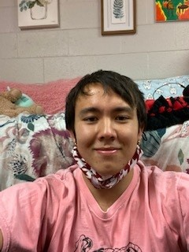

About
My name is Zachary Decker and I am Junior at Rose-Hulman Institute of Technology double majoring in computer science and software engineering. I am a hardworking and passionate student who is looking for opportunities push myself and create value with my skills.
After highschool I made the decision to study at Rose-Hulman Institute of Technology with no idea what I wanted to pursue. Luckily, I decided to try a comupter science major as I did some programming in highschool. Immediatly I was very passionate about the field always spending my time learning as much as I could in my classes. I really fell in love during a project at the end of my Freshman year where I spend countless hours with a partner creating a simple genetic algorithm. Despite the many late nights, I loved solving problems and learning new things while working on the project and I realized computer science is what I want to do as a living.
In the time since I have continued to pursue my passion, learning many skills even outside of computer science. Through the countless group projects as well as the researh project I worked on for a year, I have learned a lot about how to work in a team and how to communicate effectively.